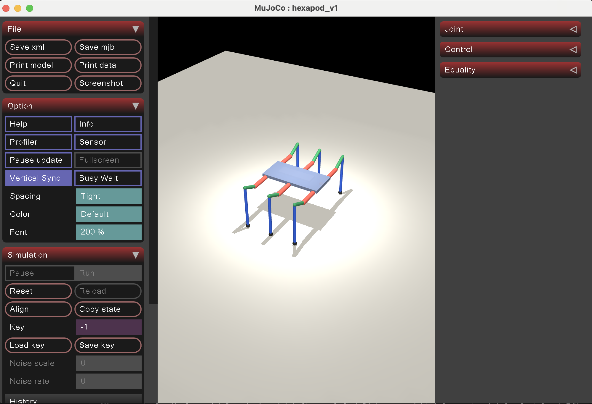
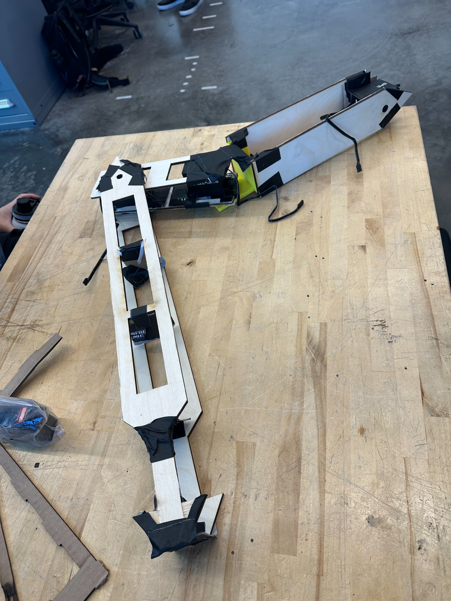
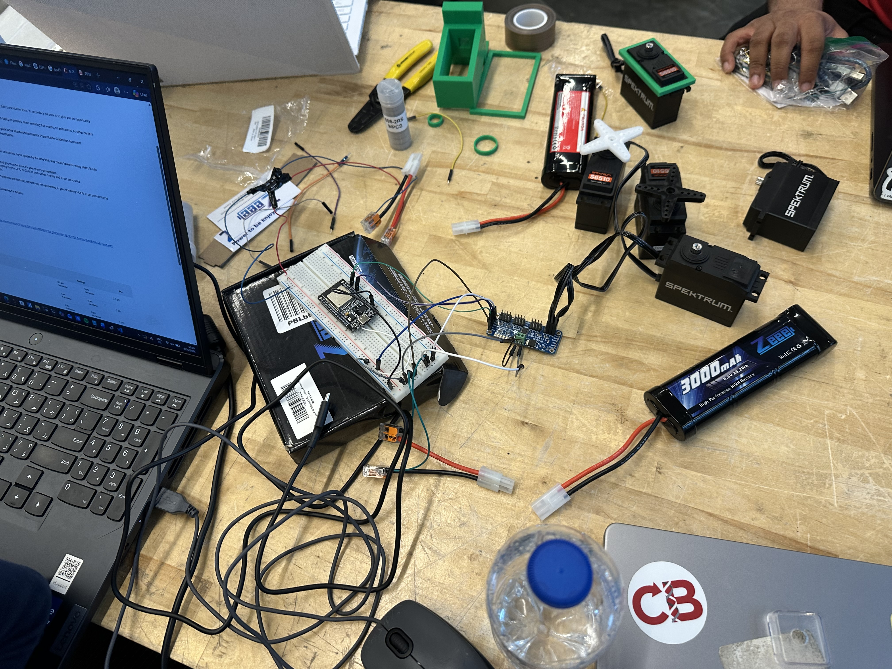
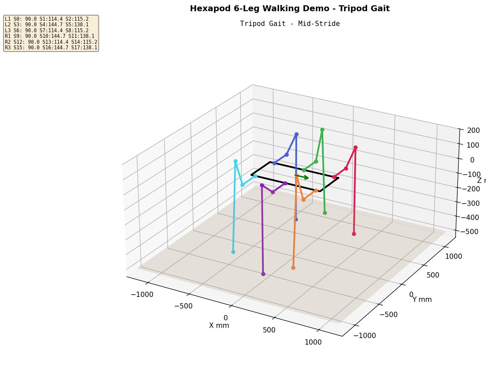
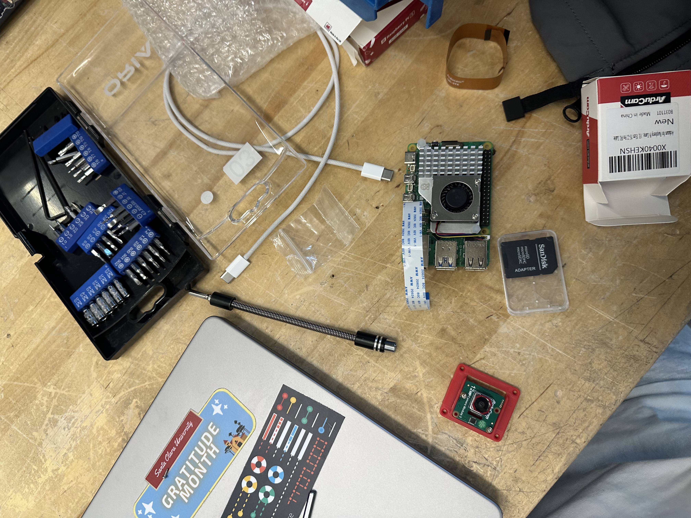
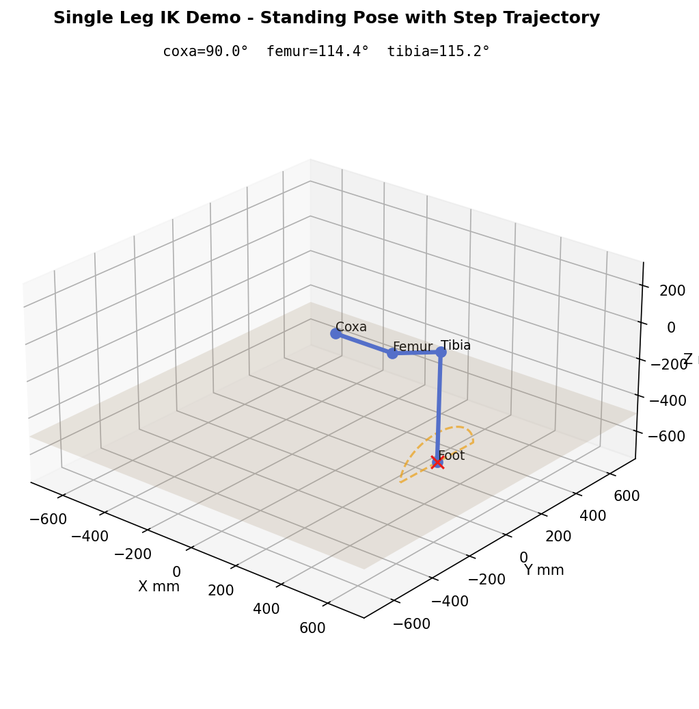
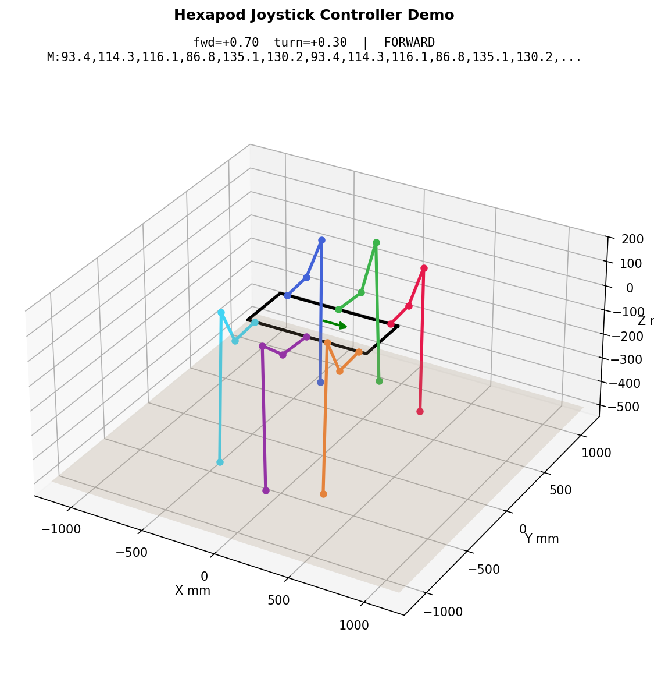

Project Video
The edited final video has not been uploaded yet. Once it is available, this page will host the embedded video alongside the latest walking and subsystem-demo clips.
Until the final video is posted, this gallery serves as the visual project log for recent demos and build milestones.
Simulation Gallery



Hardware Integration Gallery






Perception & Control Gallery



